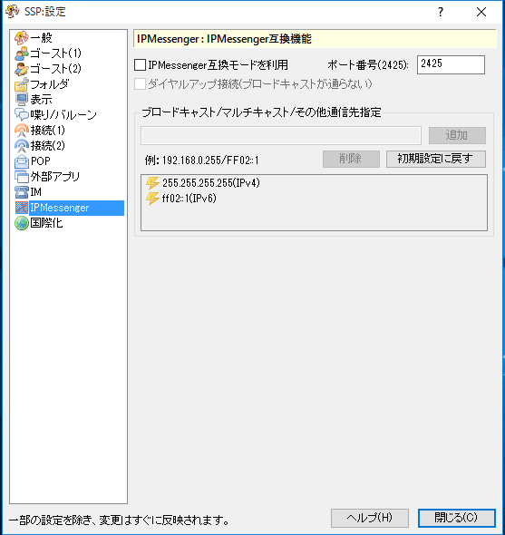

画像左側のリストをクリックで、それぞれのダイアログのページに対応する解説のページへ移動します。

このページでは右クリックメニューの「設定」サブメニューにある項目「本体設定」で開くダイアログの、「IPMessenger」ページについて解説しています。
IP Messengerを使ったインスタントメッセンジャ機能の設定です。
ログイン・ログアウトメッセージ等を送信したいIPアドレスを指定します。
通常は「ブロードキャストアドレス」「マルチキャストアドレス」と呼ばれる、同じブロック（セグメント）にある機械に一斉送信することのできるアドレスを指定します。
標準では255.255.255.255が設定されています。これで動作する場合は特に変更する必要はありません。